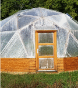
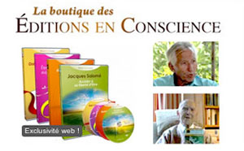

Partages
Partages
IDÉES ET LIENS À PARTAGER
Voici une sélection de liens vers des sites amis susceptibles de vous intéresser :"Un gîte en Dordogne au sein d'un jardin co-créatif"

Le jardin co-créatif est issu de la collaboration active entre l'être humain et les intelligences de la Nature. Ce partenariat, qu’il est urgent de retrouver, ouvre le chemin vers la guérison. C’est dans une vibration de Paix ainsi retrouvée que vous pourrez vous ressourcer dans le gîte en pleine nature. Catherine, la gardienne du lieu, se fera un plaisir de partager son expérience ! > Visiter son siteMichel Pépé, Compositeur
Artiste-Compositeur français autodidacte, Michel Pépé est considéré comme l’un des plus talentueux compositeurs de musiques de Relaxation et de Bien-être. Il est l’auteur de nombreux albums qui mêlent différents univers sonores, harmonies classiques et symphoniques, instruments traditionnels appartenant à diverses cultures musicales. Michel Pépé donne régulièrement des concerts en France accompagnés de spectacles audiovisuels féeriques et participe aussi à de nombreux projets écologiques et spirituels sur l’environnement, l’humanitaire… Ecoutez ses oeuvres, elles sont si inspirantes ! > Visiter son site
Les Editions en Conscience
Vous trouverez aux Editions en Conscience une sélection d'ouvrages inspirés, de reportages, d'interviews, et de documentaires donnant la parole à un certains auteurs, spécialistes et conférenciers de renommée tels que : Jacques Salomé, Marie-Françoise Neveu, Franck Hatem, Didier Wagner, etc. Les thèmes abordés sont très variés : accéder à sa liberté d'être, accompagner les enfants d'aujourd'hui ou guérir notre relation au monde...
> La boutique des Editions en Conscience